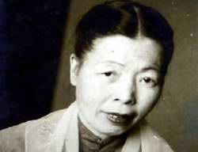

Chính tên là Vương Kiều Ân Vương họ cha, Kiều họ mẹ. Sinh tháng Janvier 1919 tại Ninh giang. Học từ năm lên bảy, năm 13 tuổi mới lên lớp ba (Hải dương, Thái bình, Bắc giang). Bỏ học sau một buổi bị cô giáo phạt quỳ.
Đã đăng thơ: Hanoi báo (ký Hồng Anh), Tiểu thuyết thứ nãm, Ngày nay, Phụ nữ. Được giải thưởng khuyến khích về thơ của Tự lực văn đoàn năm 1939.
Đã xuất bản: Bức tranh quê (Đời nay, Hà-nội 1941), Xưa (hợp-tác với Bàng Bá Lân, 1941).

.
Một hôm tôi nhận được bức thư đề: M. Hoài- Thanh, professeur, l’instituteur Thuận hóa. Tôi đã không dám khinh thường người viết thư mà lại còn kính phục thêm nữa. Vì tôi biết người viết thư là một nữ thi sĩ có danh: Anh Thơ. Đã đành hay thơ Việt không cần phải giỏi tiếng Pháp. Nhưng trong tình thế nước ta bây giờ một người thiếu niên muốn có một nền học vấn vừa vừa mà không cần đến tiếng Pháp quả là một điều thiên nan vạn nan. Cứ xem văn của Anh Thơ ai cũng phải bảo là người có học. Thế mà cái lối viết rõ ràng và chắc chắn ấy, Anh Thơ không từng học được trong tiếng Pháp. Càng kính phục người, ta càng mừng cho nền quốc văn. Quốc văn ta ngày
một thêm phong phú và hiện nay đã có thể làm lợi khí đào luyện tinh thần cho một người như Anh Thơ.
Tôi vừa nói đến lối viết của tác giả ‘‘Bức tranh quê’’, tập thơ này cũng thuộc về lối thơ của người có học. Vẫn biết làm thơ đạo tình không phải bao giờ cũng là người ít học, nhưng thường người ít học chỉ có thể làm thơ đạo tình. Phải là người có học mới có thể đưa vào thơ cái cảnh
Chó le lưỡi ngồi thừ nhìn cũi đóng,
Lợn trói nằm hồng hộc thở căng dây.
Anh Thơ từ lâu chỉ chuyên lối thơ tả cảnh, mà lại tả những cảnh rất tầm-thường: một phiên chợ, một đứa bé quét sân, một vài mụ đàn bà ngồi bắt chấy. Thơ của người biệt hẳn ra một lối. Có kẻ sẽ cho Anh Thơ là người vô tình. Nhưng có thiếu nữ nào hai mươi tuổi mà lại vô tình? Anh Thơ bắt đầu cũng đã làm những bài kể nỗi lòng mình. Hẳn người đã tập luyện nhiều lắm mới có thể đi đến cái thản nhiên, cái dửng dưng mà độc-giả ‘‘Bức tranh quê’’ ắt phải lấy làm lạ. Nhiều lúc tôi tưởng người đã đi quá xa. Tranh quê có bức chỉ là bức ảnh; cái thản nhiêr, hàm xúc của nghệ sĩ đã nhường chỗ cho cái thản nhiên trống rỗng của nhà nghề.
Theo gót thi nhân đến đó, ta thấy uất ức khó thở: người dẫn ta vào một thế giới tù túng rồi không cho ta mơ tưởng đến một trời đất nào khác nữa.
Không, thơ phải là một tia sáng nối cõi thực và cõi mộng, mặt đất với các vì sao. Thơ không cốt tả mà cốt gợi, gợi cảnh cũng như gợi tình. Cho nên mỗi lần Anh Thơ chịu đi ra ngoài lối tù túng đó để nhìn cảnh vật một cách sâu sắc hơn, lời thơ bỗng trở nên rộng rãi không ngờ và ta thấy khoan khoái biết bao. Sau câu thơ ta mơ hồ thấy một cái gì: có lẽ là hồn thi nhân. Như khi người tả cảnh bến đò trưa hè:
Mây đi vắng, trời xanh buồn rộng rãi
Sông im dòng đọng nắng đứng không trôi
hay tả cảnh một buổi sáng trong trẻo:
Gió man mát bờ tre rung tiếng sẻ,
Trời hồng hồng đáy nước lắng sơn mây
Làn khói xám từ nóc nhà lặng lẽ
Vươn mình lên như tỉnh giấc mơ say.
Cảnh trong thơ cũng bất tất phải mênh mông. Một cái vỏ ốc đủ khiến ta nghe cả tiếng sóng biển rào rạt. Chỉ có ít bông hoa mướp, một lũ chuồn chuồn mà Anh Thơ gợi nên cả cái không khí thu;
Hoa mướp rụng từng đóa vàng rải rác ;
Lũ chuồn chuồn nhớ nắng ngẩn ngơ bay
Thường người cũng không cần đến những cảnh vốn sẵn nên thơ như thế. Với một vài điều nhỏ nhặt hầu như thô lậu, người hé mở cho ta một cảnh trời. Chỗ này, giữa đám người ồn ào và đông đúc, vài ông thày bói lặng-lẽ đi
Bước gậy lần như những bước chiêm bao.
Chỗ kia, đêm ba mươi Tết, chung quanh nồi bánh chưng sôi sùng sục:
Đĩ lớn mơ chiếc váy sồi đen nhức,
Bà lão nằm tính tuổi sắp thêm năm.
Cho hay, vô cùng chỉ có thế giới bên trong. Và hình sắc đẹp là những hình sắc khéo dẫn người ta vào thế giới ấy.
Août 1941
CHIỀU XUÂN
Mưa đổ bụi êm êm trên bến vắng,
Đò biếng lười nằm mặc nước sông trôi;
Quán tranh đứng im lìm trong vắng lặng
Bên chòm xoan hoa tím rụng tơi bời.
Ngoài đường đê cỏ non tràn biếc cỏ,
Đàn sáo đen sà xuống mổ vu vơ
Mấy cánh bướm rập rờn trôi trước gió.
Những trâu bò thong thả cúi ăn mưa.
Trong đồng lúa xanh rờn và ướt lặng
Lũ cò con chốc chốc vụt bay ra,
Làm giật mình một cô nàng yếm thắm.
Cúi cuốc cào cỏ ruộng sắp ra hoa.
(Bức trang quê)
TRƯA HÈ
Trời trong biếc không qua mây gợn trắng,
Gió nồm nam lộng thổi cánh diều xa.
Hoa lựu nở đầy một vườn đỏ nắng,
Lũ bướm vàng lơ đãng lướt bay qua.
Trong thôn vắng, tiếng gà xao xác gáy,
Các bà già đưa võng hát, thiu thiu...
Những đĩ con ngồi buồn lê bắt chấy
Bên đàn ruồi rạc nắng hết hơi kêu.
Ngoài đê thẳm, không người đi vắng vẻ
Lũ chuồn chuồn giỡn nắng, đuổi nhau bay.
Nhưng thỉnh thoảng tiếng nhạc đồng buồn tẻ
Của vài người cỡi ngựa đến xua ngay.
(BỨC TRANH QUÊ )
BẾN ĐÒ NGÀY MƯA
Tre rũ rợi ven bờ chen ướt át
Chuối bơ phờ đầu bến đứng dầm mưa.
Và dầm mưa dòng sông trôi rào rạt
Mặc con thuyền cắm lại đậu chơ vơ.
Trên bến vắng, đắm mình trong lạnh lẽo
Vài quán hàng không khách đứng xo ro.
Một bác lái ghé buồm vào hút điếu
Mặc bà hàng sù sụ sặc hơi, ho.
Ngoài đường lội họa hoằn người đến chợ
Thúng đội đầu như đội cả trời mưa.
Và họa hoằn một con thuyền ghé chở
Rồi âm thầm bến lại lặng trong mưa.
(Bức Tranh Quê)
RẰM THÁNG BẢY
Gió hiu hắt gieo vàng muôn cánh lá,
Trời âm u mây xám bóng sương chiều.
Làng xóm ngập nhà nhà trong khói tỏa
Vẳng đưa lời khóc mã lạnh hiu hiu.
Trong chùa, điện hương đèn nghi ngút sáng
Tiếng mõ, chuông hòa nhịp trống bên đình.
Lời cầu cúng truyền theo làn khói thoảng
Quyến cô hồn nương gió lại nghe kinh.
Ngoài đê rộng bồ đài nghiêng đổ cháo
Lễ chúng sinh từng bọn một ăn mày.
Cùng lẳng lặng như bóng ma buồn não
Dắt nhau tìm nơi cúng để xin may.
(bức tranh quê)